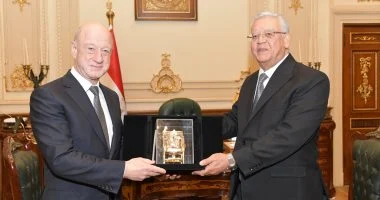

استقبل المستشار الدكتور حنفى جبالى رئيس مجلس النواب، اليوم، الكساندر بابكوف نائب رئيس مجلس الدوما للجمعية الفيدرالية لروسيا الاتحادية

قال شريف فاروق، وزير التموين والتجارة الداخلية ، أن قطاع المشروعات المتوسطة والصغيرة ومتناهية الصغر لم يعد مجرد وسيلة لتوفير فرص العمل فقط، بل أصبح مكونًا استراتيجيًا في بناء اقتصاد أكثر شمولًا وعدالة
توجه النائب تيسير مطر، وكيل لجنة الصناعة بمجلس الشيوخ، فى ضوء الاجتماع الأخير الذى عقده الفريق مهندس كامل الوزير، نائب رئيس مجلس الوزراء للتنمية الصناعية.
قام المهندس شريف الشربيني، وزير الإسكان والمرافق والمجتمعات العمرانية، بزيارة مفاجئة اليوم، لجهاز تنمية مدينة العبور، تابع خلالها سير العمل بالجهاز، والمركز التكنولوجي لخدمة المواطنين.
عقدت غرفة الصناعات الهندسية برئاسة محمد المهندس اجتماعا حول مستقبل قطاع صناعة الاسطمبات في مصر واستضافة الغرفة الهندسية الخبير الإنجليزي توماس كوبينيتز المدير التنفيذي لشركة hermle الالمانية المتخصصة